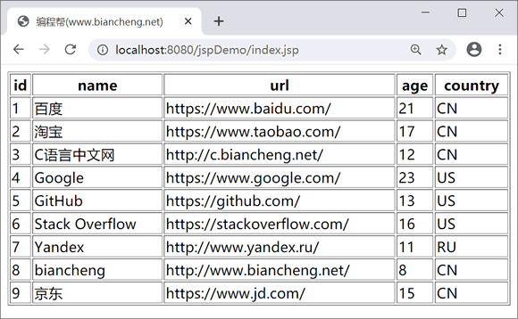

首页 > JSTL > JSTL SQL标签
<sql:transaction>标签
JSTL <sql:transaction> 标签用于事务管理，可以将 <sql:query>、<sql:update> 标签封装在事务中，以确保事务的一致性。
根据事务的特性，<sql:transaction> 中的语句要不都执行，要不都不执行。
运行结果如下：
语法
JSP <sql:transaction> 标签的语法如下：
<sql:transaction dataSource="dataSource" isolation="isolation">
<sql:query .../> 或 <sql:update.../>
</sql:transaction>
其中：
- dataSource：用来指定数据源；
- isolation：设置事务的隔离级别，有 4 个取值：READ_UNCOMMITTED、READ_COMMITED、REPEATABLE_READ 和 SERLALIZABLE。
示例
下面为 <sql:transaction> 标签的简单实例。
<%@ page language="java" contentType="text/html; charset=UTF-8"
pageEncoding="UTF-8"%>
<%@ page import="java.io.*,java.util.*,java.sql.*"%>
<%@ page import="javax.servlet.http.*,javax.servlet.*"%>
<%@ taglib uri="http://java.sun.com/jsp/jstl/core" prefix="c"%>
<%@ taglib uri="http://java.sun.com/jsp/jstl/sql" prefix="sql"%>
<!DOCTYPE html>
<html>
<head>
<title>编程帮(www.biancheng.net)</title>
</head>
<body>
<sql:setDataSource var="snapshot" driver="com.mysql.jdbc.Driver"
url="jdbc:mysql://localhost:3306/test?useUnicode=true&characterEncoding=utf-8"
user="root" password="root" />
<sql:transaction>
<%-- 插入数据 --%>
<sql:update dataSource="${snapshot}" var="result">
INSERT INTO website (NAME,url,age,country) VALUES ('京东', 'https://www.jd.com/', 15, 'CN');
</sql:update>
<%-- 修改website表中id为8数据--%>
<c:set var="id" value="8" />
<sql:update dataSource="${snapshot}" var="count">
UPDATE website SET name="biancheng" WHERE id = ?
<sql:param value="${id}" />
</sql:update>
<%-- 查询数据 --%>
<sql:query dataSource="${snapshot}" var="result">
SELECT * from website;
</sql:query>
</sql:transaction>
<table border="1" width="100%">
<tr>
<th>id</th>
<th>name</th>
<th>url</th>
<th>age</th>
<th>country</th>
</tr>
<c:forEach var="row" items="${result.rows}">
<tr>
<td><c:out value="${row.id}" /></td>
<td><c:out value="${row.name}" /></td>
<td><c:out value="${row.url}" /></td>
<td><c:out value="${row.age}" /></td>
<td><c:out value="${row.country}" /></td>
</tr>
</c:forEach>
</table>
</body>
</html>
根据事务的特性，<sql:transaction> 中的语句要不都执行，要不都不执行。
运行结果如下：

关注公众号「站长严长生」，在手机上阅读所有教程，随时随地都能学习。内含一款搜索神器，免费下载全网书籍和视频。

微信扫码关注公众号